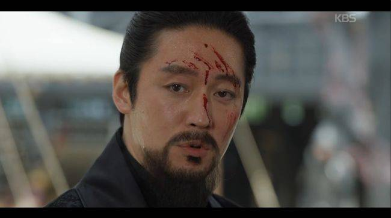

연예·스포츠
KBS 대하드라마 '문무' 첫 방송…'고려거란전쟁' 이후 3년 만의 대하사극

300억 원 넘는 제작비, 김강우·장혁·이현욱 출연…연개소문 반란 장면으로 첫 회 마무리
KBS2 새 대하드라마 '문무'가 14일 첫 방송을 했다. '문무'는 삼국 사이의 오랜 전쟁과 내부 격변 속에서 통일을 향해 나아간 지도자들의 이야기를 다루며, 제작비는 300억 원이 넘는 것으로 알려졌다. 최고 시청률 13.8%를 기록한 '고려거란전쟁' 이후 약 3년 만에 나온 대하드라마다. 첫 회에서는 신라의 김춘추(김강우)가 아들 김법민(이현욱)과 갈등하는 모습, 고구려의 연개소문(장혁)이 사열식에서 반란을 일으켜 조정을 장악하는 장면이 그려졌다. 방송 뒤 온라인에서는 배우들의 연기와 규모 있는 연출을 두고 호평이 이어졌다.
출처: OSEN 2026-11-14 장우영 원문 보기
시민이 만들고 지역이 소유하는 에너지 전환市民がつくり、地域が所有するエネルギー転換市民创造、地方拥有的能源转型An energy transition built by citizens, owned by communities제4섹터 방식 시민주도 지역에너지 공공개발第4セクター方式・市民主導の地域エネルギー公共開発第四部门模式 · 市民主导的地方能源公共开发Fourth-sector, citizen-led public development of local energy